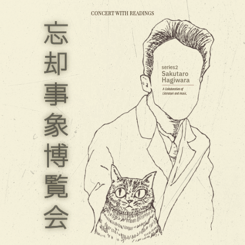
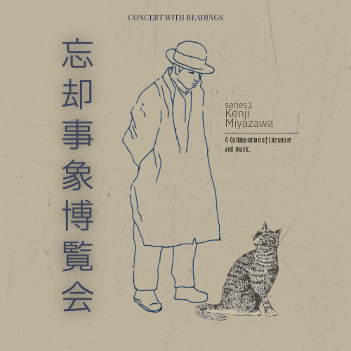
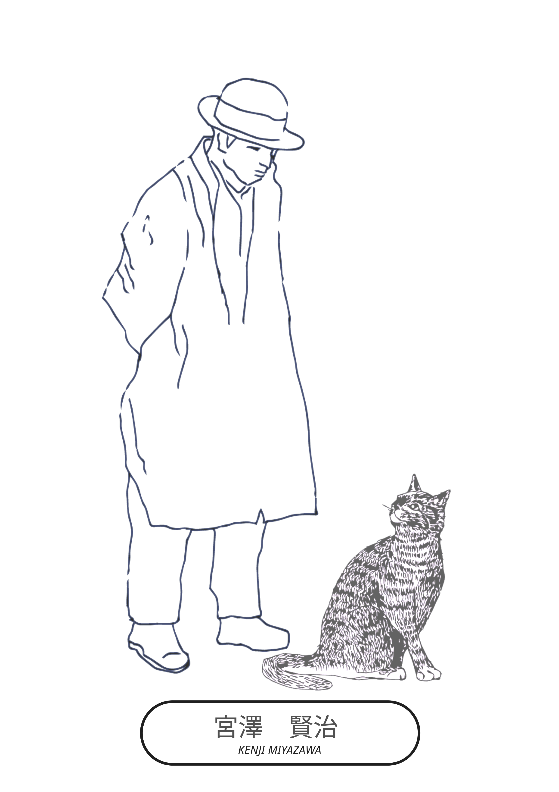
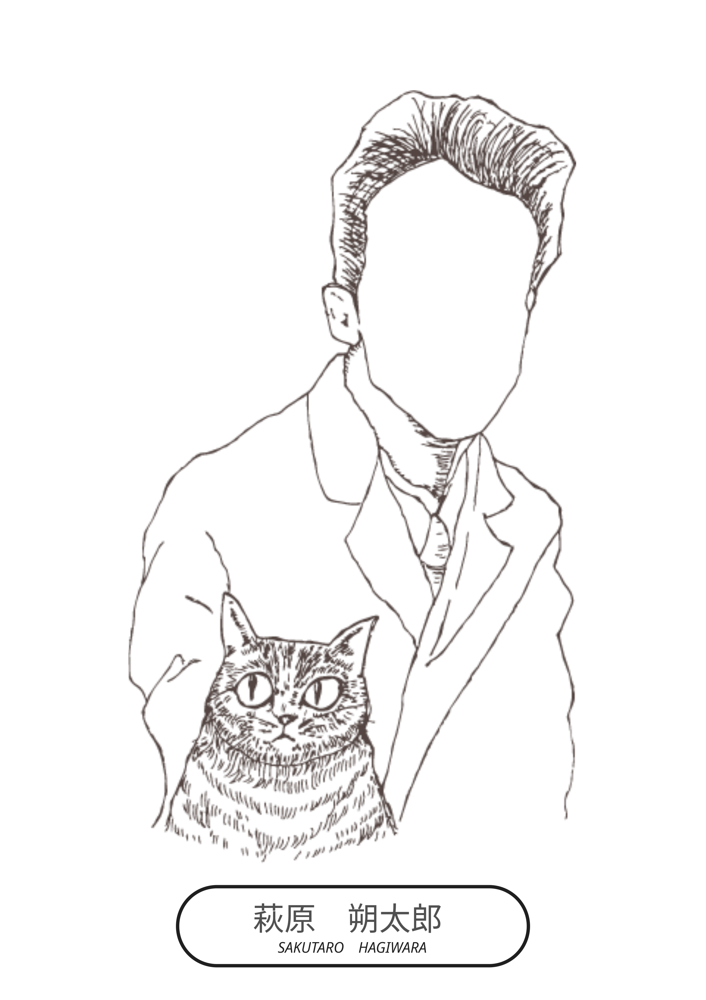

忘却事象博覧会
スケジュール
2026/5/24(SUN) 下北沢BAR?CCO
155-0032 Tokyo setagaya daizawa 5-32-10 B1
開館時間=18:30 開演時間=19:00
チケット=前売3,000円/当日3,500円（+2drink1,200円）
※中学生以下無料（別途2drink1,200円のみ要） ※Thank You! Sold Out!
出演：Mao Takeuchi (NOVELS) and SpecialGuests
過去の公演

2026/2/22(SUN) 下北沢BAR?CCO
155-0032 Tokyo setagaya daizawa 5-32-10 B1
開館時間=18:30 開演時間=19:00
チケット=前売3,000円/当日3,500円（+2drink1,200円）
※中学生以下無料（別途2drink1,200円のみ要）
※Thank You! Sold Out!
出演：Mao Takeuchi (NOVELS) and SpecialGuests
協力：SABATORASHOKAI/Bar Bachibouzouk
取り扱い文豪リスト

宮澤 賢治
KENJI MIYAZAWA

1896年（明治29年）8月27日 岩手県花巻市生まれ。
詩人、童話作家、教師、科学者、宗教家など多彩な顔を持つ一方、農民の生活向上を目指して羅須地人協会を設立。
37歳で永眠。
生前は、詩集『春と修羅』、童話集『注文の多い料理店』（1924）を残す。
-忘却事象博覧会取り扱い作品-
- 心象スケッチ序（抄）
- 林と思想
- 遠く琥珀のいろなして
- 銀河鉄道の夜（Talk to the wall)
- 敗れし少年のうたへる
- ぬすびと

萩原 朔太郎
SAKUTARO HAGIWARA

1886年（明治19年）11月1日 群馬県前橋市生まれ。
近代詩の父と称される日本を代表する詩人。
『月に吠える』などで口語自由詩の新たな地平を切り拓いた。
-忘却事象博覧会取り扱い作品-
- （その他の作品情報は後日追加予定）
グッズ
忘却事象博覧会のオリジナルグッズや文豪関連商品は
サバトラ商會のSHOPにてお取り扱いしております。
ギャラリー


公演に関するお問い合わせは以下よりお願いいたします。
お問い合わせフォームへ